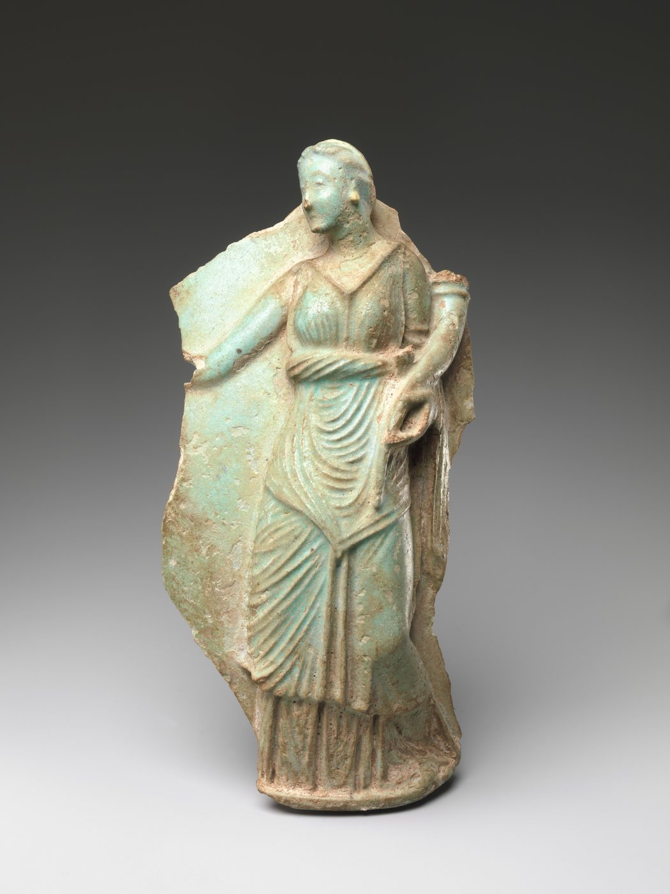
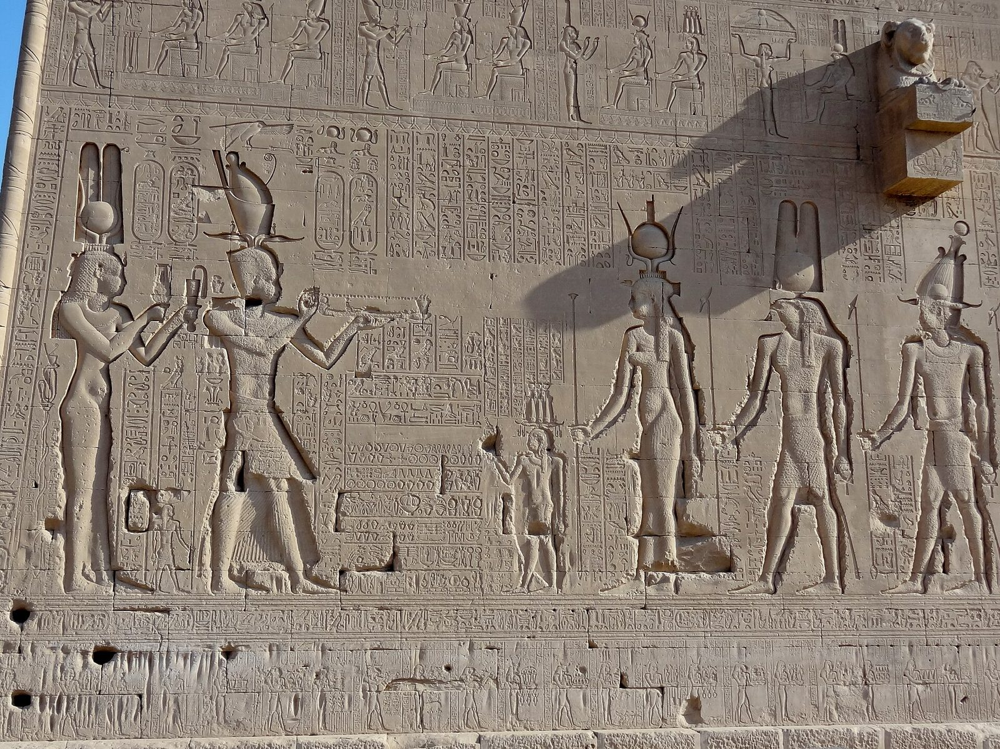

Unit 7 · Women in ancient Greece · Lesson 16
Queens, cults and citizens
Women in Hellenistic religious and political life: what can a poem, a priests’ decree, a coin, a temple wall and one city’s inscription show about queens and a citizen woman, and what can’t they? Then: how do you plan a timed answer in five minutes?
Year 11 Ancient History · Present with → or space · Read on a phone with R

Images: The Met (CC0 1.0). Full details on the last slide.
Connect · 3 minutes · books closed · everyone writes one line · press K, click 3, then Start
Arsinoe II: one piece of evidence for her cult
Give one piece of evidence for Arsinoe II’s cult and say what it shows.
Cold call two students: what is the evidence, and what does it show?
A gold octadrachm (Met 30.115.23, ca. 261–246 BCE). The Met lists it under Ptolemy II, but its legend names her: ‘of Arsinoe Philadelphos’. It was struck after she died (in 270 or 268 BCE). It shows her honoured after death, so it is better evidence of her prestige than of her power in life.
A loan of 221–220 BCE (Select Papyri I 65, Lesson 13) is dated by “the kanephoros of Arsinoe Philadelphus”, Aristomache (a kanephoros is a basket-bearer): her cult still had its own officer about fifty years after she died.
Today: queens after Arsinoe II, one citizen woman, and a plan you can make in five minutes.
Learning intentions and success criteria · 2 minutes
Today’s goals
- explain the reasons for the status and role of royal and non-royal women in Hellenistic religious and political life
- plan a timed extended response in five minutes
- explain, with evidence, what a poem, a decree, a coin, a relief and an inscription show about royal and non-royal women, and what they cannot show
- use Phile of Priene to test whether Greek women’s political roles changed
- write a thesis of degree and three topic sentences in five minutes
Syllabus outcomes: AH-11-02 proposes ideas about the varying causes and effects of events and developments · AH-11-03 explains the role and significance of forces, features, events, individuals and groups in shaping the past · AH-11-07 communicates historical understanding, applying historical knowledge, terms and concepts. Life Skills: AH-LS-04 recognises causes and effects of events or developments · AH-LS-11 communicates information about the past using historical terms and concepts.
Note-making · the routine for the whole course
How to structure your notes
- 1A new page for each lessonA cue column about a quarter of the page wide; title and date at the top; room for a summary at the bottom.
- 2Listen and look, then writeDon’t copy while a slide is being explained. Phrases, not sentences; a source for every claim.
- 3Write your own notes at each ✎ checkpointThen compare with the model notes, one row at a time. Add what you missed in a second colour.
- 4Write the cue questions afterwardsUse exam verbs: identify, describe, explain. To revise, cover your notes and answer the cues.
- 5Finish with a three-sentence summaryTwo checkpoints today: the queens and Phile · the evidence sort. Your plans go on your plan sheet and in your answer booklet, not in your notes.
Key vocabulary · add to the unit word wall
Words for today’s evidence and today’s writing
| Writing terms | Meaning |
|---|---|
| Five-minute plan / thesis of degree | Deconstruct → thesis → three topic sentences → evidence → counter-view / a thesis that answers with a degree and its reasons. |
| Judgement of degree | entirely · largely · to a significant extent · partly · only to a limited extent · not at all |
| Assess | NESA, Glossary of key words: ‘Make a judgement of value, quality, outcomes, results or size.’ Department advice: a judgement of degree, weighed against evidence on both sides. |
| To what extent | Not a glossary word: NESA calls it a self-explanatory term. It asks for a judgement of degree, argued with evidence. |
| Content terms | Meaning |
|---|---|
| Hellenistic | The Greek world from Alexander’s death (323 BCE) to the end of the Ptolemies (30 BCE). |
| Ptolemies | The Macedonian Greek dynasty that ruled Egypt from Ptolemy I to Cleopatra VII. |
| Ruler cult | Worship of a living or dead ruler as a god, such as the Sibling Gods (Theoi Adelphoi). |
| Decree | A formal decision of a city or council, often inscribed on stone. |
| Stephanephoros | ‘Crown-bearer’: the chief magistrate of some Greek cities, such as Priene. |
| Added today | Meaning |
| Dynasty | A line of rulers from one family. The Ptolemies were a dynasty. |
| Deify | To make a person a god. A decree of 238 BCE deified a dead royal princess. |
| Votive offering | A gift to a god, often given to keep a promise. |
1 · I do · Berenice II · think aloud: who made it, for whom, and what can’t it show?
Berenice II: a lock of hair and a deified daughter
Who: Berenice II (about 267–221 BCE), queen of Egypt from 246 BCE as the wife of Ptolemy III.
What survives: a poem about her, written by a Roman poet; a decree of Egyptian priests; objects such as the faience vase fragment at the Met.
… he that same Conon saw me, a lock of hair from Berenice’s head, in the celestial light, gleaming brightly …
Catullus, a Roman poet of the 1st century BCE, adapted a Greek poem written for the Ptolemaic court (Callimachus’s Lock of Berenice) · prose translation · Conon = the court astronomer, “he who scanned all the lights of the great firmament”
… a divine image of this goddess, made of gold and inlaid with precious stones of all kinds shall be set up in each and every temple of the first and second rank … and the statue shall be called “Berenice, mistress of virgins.”
Written by an assembly of priests at Canopus, Egypt, to honour the royal family; “this goddess” is Berenice, “the daughter of the two Beneficent Gods” (Ptolemy III and Berenice II), who had died · also issued in demotic and Greek · Egyptian in form, about a Greek royal family
- 1The poemA Roman poet, nearly two centuries later, retelling a Greek court poem. It shows how a queen’s story was told, not what she did.
- 2The decreeEgyptian priests voting a divine image and festivals for a dead royal princess. It shows what the priests chose to honour, in Egyptian form.
- 3So askWho made it? For whom? What can’t it show? Keep these three questions for every card today.
1 · I do · Cleopatra VII (69–30 BCE; ruled 51–30 BCE) · the last Ptolemaic ruler
Cleopatra VII: her own coin, an Egyptian wall, a later writer

- 1The coinHer own message: her name and portrait, as ‘Queen’. It shows how she chose to appear, not what her subjects thought.
- 2The wallAn Egyptian temple, in the Egyptian style: she and her son offer to the gods. Egyptian evidence, about a Greek queen.
- 3PlutarchA vivid picture, from a writer more than a century later. It shows what later readers were told, not what she was like.
Bronze, 27 mm, minted at Alexandria, 44–30 BCE (the museum’s dating). One side: her diademed bust. The other: an eagle on a thunderbolt, a double horn of plenty and the legend ‘of Queen Kleopatra’. The museum reads the double horn as co-regency: she ruled with her young son, Caesarion.
Museum catalogue text (Douglas Kelly) · the museum’s photographs are not openly licensed, so see them on its catalogue page
… and her tongue, like an instrument of many strings, she could readily turn to whatever language she pleased …
Plutarch wrote some 130 to 150 years after Cleopatra died in 30 BCE
1 · I do · beyond Egypt · a citizen woman in a Greek city’s chief office · the exception that tests the rule
Phile of Priene: the first woman stephanephoros
Where: Priene, a Greek city in Ionia (western Asia Minor), by then in Rome’s province of Asia. Not Egypt.
When: about 100–50 BCE (the date is approximate).
What: an inscription (I.Priene 208).
Phile, daughter of Apollonios and wife of Thessalos, son of Polydeukes, is named as the city’s first woman stephanephoros (its chief magistrate). The inscription records that she dedicated the city’s reservoir and aqueducts from her own resources.
Why is Phile the exception that tests the rule? Think first.
- 1The ruleGreek citizen women did not hold political office: Lesson 9 showed Athenian women kept out of the Assembly, and Lesson 13’s women acted with a guardian. Priesthoods (Lesson 8) were religious offices.
- 2The exceptionThe inscription names her the first woman in the office, so before her no woman in Priene had held it.
- 3The limitOne inscription, one city, one woman: it cannot show that other women held office.
Notes checkpoint 1 of 2
Queens and a citizen: what survives?
2 · We do · in pairs · 4 minutes · for each card say what it shows and what it can’t · then the key
Six cards: what does each show, and what can’t it? Not a ranking. Fill in the last two columns in your notes, then check the key.
- 1 · Catullus 66 · a Roman poet, 1st century BCE, adapting a Greek poem about Berenice II’s lock of hair
- 2 · The Canopus decree · 238 BCE · priests’ decree, hieroglyphic version: Egyptian in form
- 3 · Cleopatra’s coin · ANU 1976.01 · bronze, Alexandria, 44–30 BCE, issued in her name
- 4 · The Dendera relief · Egyptian temple, Egyptian style: Egyptian in form
- 5 · Plutarch, Antony 27.3 · a Greek biographer, about 100–120 CE
- 6 · Phile of Priene · an inscription, about 100–50 BCE, in a Greek city in Asia Minor
| Card | What it shows | What it can’t show |
|---|---|---|
| 1 | A queen’s gift of her hair to the gods, told as a star story | What Berenice II did as queen: a Roman’s retelling, nearly two centuries later |
| 2 | Priests voting a divine image, festivals and a title for a dead royal princess | What the royal family decided, or what Greek settlers thought: the priests honour a royal family that has been good to their temples |
| 3 | Cleopatra issuing coin in her own name as ‘Queen’, with a son as co-ruler (the museum’s reading) | How she ruled, or how her subjects saw her: it is her own message |
| 4 | An Egyptian temple showing Cleopatra and Caesarion offering to the gods as rulers | What they did or looked like: Caesarion, a boy or teenager, is shown as a grown pharaoh |
| 5 | How a Greek biographer pictured her voice, charm and languages | What she was like: Plutarch wrote 130–150 years later, for readers far from Egypt |
| 6 | A woman outside the royal family named as the first in her city’s chief office, who paid for its water supply | That other women held office: one inscription, one city, not Egypt |
2 · We do · cold call · 1 minute
A woman outside the royal family
Which of the six cards shows a woman outside the royal family, and what can’t it show?
Pairs say it to each other (15 seconds), then cold call two pairs.
A strong answer names the card, says what it shows (a citizen woman, in a Greek city in Asia Minor, named as the first woman in her city’s chief office, who paid for its water supply) and what it can’t show: that other women held office or why she was chosen. It is one inscription from one city, about 100–50 BCE, and not Egyptian.
Notes checkpoint 2 of 2
Limits: what each kind of evidence can’t show
3 · Writing focus · 8 minutes · I do → We do → apply
Writing focus: a plan you can make in five minutes
Five steps on a five-minute clock: deconstruct → thesis → three topic sentences → evidence → one counter-view.
Question: To what extent was Arsinoe II a powerful queen?
1 · Deconstruct (1 min): to what extent = a degree · her power as queen · the evidence that survives · a thesis, three points, a counter-view
2 · Thesis (1 min): Arsinoe II was powerful only to a limited extent: her cult and coins show great prestige, but mostly after her death, and her influence on Ptolemy II’s policy is debated.
3 · Topic sentences and 4 · evidence (2 min): (1) Her prestige is clear but mostly later: a gold octadrachm naming her, ‘of Arsinoe Philadelphos’, about 261–246 BCE; a kanephoros of her own cult, “the kanephoros of Arsinoe Philadelphus”, in a loan of 221–220 BCE (her own cult probably began after her death, Caneva). (2) In her own years the evidence shows how she was pictured, not what she decided: a faience vase fragment the Met dates 278–270 BCE. (3) On policy the evidence is thin: an Athenian decree names “the predilection (proairesei) both of his ancestors and of his sister”, yet “we do not know if this mention of her is posthumous”.
5 · Counter-view (1 min): Caneva reports that much twentieth-century writing pictured a very powerful and unscrupulous court schemer; on that view the decree’s “of his sister” would be real influence.
Teacher keeps time: one minute. Do step 1: verb, topic, limits, do.
Assess the reasons why royal women gained status under the Ptolemies.
Your Writing toolkit (booklet pages 3–4): the verb table and the four-step routine.
Same plan; step 2 now reads “Arsinoe II was a powerful queen, although her power is debated.” Which rewrite gives a degree the plan’s evidence supports?
- AArsinoe II was a very powerful queen indeed, because her cult and coins were so widely spread.
- BArsinoe II was powerful only to a limited extent, because her cult and coins mostly followed her death.
- CArsinoe II was not powerful at all as a queen, because her cult and coins followed her death.
- DArsinoe II was a powerful queen overall, although her cult and coins mostly followed her own death.
“Only to a limited extent” fits a plan that finds real prestige but little proof of policy. A overclaims (spread says nothing about policy). C says “not at all”, but the plan has real prestige to account for. D has no degree: “powerful … although” is a yes with a limit added.
3 · You do · check your deconstruction · cold call: “What does this question ask you to do?”
Your two questions: what does each ask you to do?
1 · Assess the reasons why royal women gained status under the Ptolemies.
2 · To what extent were Greek women in Ptolemaic Egypt more independent than women in Classical Athens?
| Step | Question 1 | Question 2 |
|---|---|---|
| Verb | assess: NESA, Glossary of key words: ‘Make a judgement of value, quality, outcomes, results or size.’ Department advice: judge, not list | to what extent: not a glossary word; a self-explanatory term that asks for a judgement of degree. Department advice: treat it as assess for a degree |
| Topic | why royal women gained status: the reasons, not only the evidence for it | how independent Greek women were in Ptolemaic Egypt, compared with Classical Athens |
| Limits | royal women; under the Ptolemies (not Athens, not Egyptian women) | Greek women in Ptolemaic Egypt (not Egyptian women); Classical Athens, as the unit has studied it; “more independent than”: a comparison |
| Do | a thesis that judges the reasons with a degree; evidence for each reason you use; a counter-view weighed | a thesis with a degree for the comparison; evidence from both settings; a counter-view weighed; what the evidence can’t show |
3 · You do · two plans · 5 minutes each · press K, click 5, then Start · plan on your plan sheet
Plan question 1, then plan question 2
- 0:00 – 1:00Deconstruct: verb · topic · limits · do
- 1:00 – 2:00Thesis of degree: your judgement and your main reasons
- 2:00 – 4:00Three topic sentences, each with its evidence
- 4:00 – 5:00One counter-view: the best case against your degree
Write your plan in the first five minutes of writing time. In the HSC, reading time is for thinking only: NESA’s 2027 HSC student guide, p. 19, step 3, “Reading time”, says: “You must not write on or mark your exam in any way or use any equipment (including highlighters).”
Plan sheet: a box for each step. Thesis frame, with every slot yours: “… was … , because … and … , although … .” Use your notes from today and Lessons 12–15.
Assess whether queens like Cleopatra VII show a change in Greek women’s political roles, or only in royal power. Plan it in five minutes, and write your counter-view first.
- Does your thesis give a degree, not a yes or no?
- Does each topic sentence answer the question?
- Does each point have its own evidence?
- Is your counter-view your strongest case against your own degree?
3 · You do · 12 minutes · press K, click 12, then Start · write for 10 · check at 2:00 left
Write one introduction, for one of your two plans
- Context: who, when, where, in one or two sentences with expanded noun groups.
- Key term: define or limit one only if the question needs it.
- Thesis: your judgement of degree and your main reasons, with a concession (although …). The thesis previews your argument.
- Contest: optional: one sentence on why historians disagree.
Four to five sentences. No sentence that begins “This essay will …”.
Underline your degree word. Does the same degree appear in your plan’s counter-view? Fix one thing in a second colour.
Frame for the thesis only, every slot yours: “[Topic] was … , because … and … , although … .” Your Writing toolkit (booklet pages 3–4): the modality scale and degree words.
Write the thesis so that its concession names the historians’ debate, and use a conditional (only when …, unless …) in the thesis itself.
- Sets the scene in specific words (who, when, where).
- States one thesis, with a degree and its reasons.
- Keeps the same degree you will use to the end.
- Ends on the judgement, not on what the essay will do.
Check · 5 minutes · sticky notes · your second thesis on the line
Where does your second thesis sit?
Write your thesis for question 2 on a sticky note. Post it on the line:
Cold call three students to read their thesis aloud. What makes one precise?
- A degree word that sits at one place on the line, not a yes or no.
- Two reasons in the student’s own words, tied to evidence from both settings.
- A concession (although …) that limits the degree and does not cancel it.
- The same degree the plan’s counter-view still allows.
Check · exit ticket · 3 minutes · one sentence · collected
Exit ticket: one reason royal women gained status
Name one reason royal women gained status under the Ptolemies, and give one piece of evidence.
- Dynasty: kings’ wives, sisters, mothers, or rulers themselves, with a named queen (for example Berenice II, or Cleopatra VII, who ruled).
- Ruler cult: deified queens, with a document (for example the Canopus decree of 238 BCE, an Egyptian priests’ decree, or Arsinoe II’s cult).
Circle the one you are least sure of.
Finish your notes If time · or at home
Summary: three sentences
- What kinds of evidence survive for Berenice II and Cleopatra VII, and what can’t they show?
- Why is Phile of Priene an exception?
- What are the five steps of a five-minute plan?
For Berenice II (about 267–221 BCE) and Cleopatra VII (69–30 BCE) we have a Roman poem, a priests’ decree and a temple relief that are Egyptian in form, a coin in Cleopatra’s own name and a biography written some 130 to 150 years later, and each shows how a queen was presented, not what she did. Phile of Priene is an exception, named as the first woman in her city’s chief office, but she is one inscription from one city. A five-minute plan deconstructs the question, states a thesis of degree, gives three topic sentences with evidence, and ends with one counter-view.
Practice and review · 1 of 4 · true, false, justify
True or false? Justify your answer
- 1Catullus 66 was written by a Greek poet at the Ptolemaic court. False — Catullus was a Roman poet of the 1st century BCE; his poem adapts a Greek poem (Callimachus’s).
- 2The Canopus decree was written by Egyptian priests, so it is Egyptian evidence about a Greek royal family. True — it is a priests’ decree, and the version used here is the hieroglyphic text; it was also written in demotic and Greek.
- 3Plutarch knew Cleopatra and wrote what he saw. False — he wrote about 100–120 CE, some 130 to 150 years after she died in 30 BCE.
- 4Phile’s inscription shows that many Greek women held public office. False — it names her as the first woman in her city’s chief office; it is one inscription from one city, so it shows an exception.
- 5In a five-minute plan the thesis comes after the three topic sentences. False — the order is deconstruct, thesis, three topic sentences, evidence, counter-view.
- 6In HSC reading time you should mark the sources and write your plan. False — it is for thinking: NESA’s guide says you “must not write on or mark your exam in any way”.
Practice and review · 2 of 4 · fix a thesis, then plan another question
Fix the thesis, then plan in five minutes
Question: To what extent does Plutarch’s Antony 27 show what Cleopatra VII was like?
“Plutarch shows what Cleopatra was like.”
This thesis is a yes. Rewrite it with a degree and a reason, using what you know about Plutarch’s distance in time.
Plutarch’s Antony 27 shows what Cleopatra was like only to a limited extent: his picture of her voice, charm and languages is vivid, but he wrote some 130 to 150 years after her death, for Greek and Roman readers.
To what extent does the evidence for Berenice II show a queen with power of her own?
Use the five steps: deconstruct · thesis · three topic sentences · evidence · counter-view.
- A degree, not a yes or no.
- Each topic sentence answers the question, not “what the source says”.
- Each point has its own evidence, with who made it and when.
- A counter-view that could change your degree.
Practice and review · 3 of 4 · extension · assess
Queens and Greek women’s political roles
Assess whether queens like Cleopatra VII show a change in Greek women’s political roles, or only in royal power.
NESA: assess means ‘Make a judgement of value, quality, outcomes, results or size.’ (Glossary of key words)
Cleopatra VII: a coin in her own name as ‘Queen’, and the Dendera relief, an Egyptian temple’s picture of her ruling with her son.
Phile of Priene: named as the first woman in her city’s chief office, about 100–50 BCE.
- Separates royal power from women’s political roles, and says which the evidence shows.
- Uses Phile as a test case and says what her inscription can’t show.
- Writes the counter-view first, then a thesis with a degree.
- Says what evidence outside royal women would be needed to be sure.
Practice and review · 4 of 4 · cover your notes and answer from memory
Quick checks
- Who made Catullus 66, when, and what is its limit? Catullus, a Roman poet of the 1st century BCE, adapting a Greek poem about Berenice II’s lock of hair. It shows how a queen’s story was told, not what she did, and it comes nearly two centuries later.
- Why is the Canopus decree “Egyptian in form”, and what does it show? It was passed by Egyptian priests in 238 BCE and the version used is the hieroglyphic text. It shows divine honours for a dead royal princess, Berenice, and the priests’ regard for a royal family that favoured their temples.
- What does Cleopatra VII’s coin show, and what can’t it show? It shows her issuing coin in her own name as ‘Queen’, with a son as co-ruler (the museum’s reading). It can’t show how she ruled or how her subjects saw her: it is her own message.
- How long after Cleopatra did Plutarch write, and why does it matter? Some 130 to 150 years after she died in 30 BCE. He was not an eyewitness, so his picture is a later writer’s.
- What is a stephanephoros, and why is Phile an exception? The chief magistrate of some Greek cities, such as Priene. Phile is named as the first woman to have held it there, so she is an exception, and one inscription cannot show that others did.
- What are the five steps of a five-minute plan? Deconstruct, thesis of degree, three topic sentences, evidence for each, one counter-view.
Sources and credits
Where everything comes from
Catullus, Poem 66, lines 7–9: trans. Leonard C. Smithers, The Carmina of Gaius Valerius Catullus (London: Smithers, 1894), on the Perseus Digital Library (CC BY-SA 3.0 US). The Canopus decree, hieroglyphic version (Cairo CG 22187; 238 BCE): trans. E. A. W. Budge, as presented on attalus.org. Plutarch, Antony 27.3: trans. Bernadotte Perrin, Plutarch’s Lives IX (Loeb Classical Library, 1920), on LacusCurtius (public domain). Chremonides decree (IG II³ 1 912): trans. Sean Byrne, Attic Inscriptions Online (CC BY-SA 3.0). Select Papyri I 65: trans. A. S. Hunt and C. C. Edgar (Loeb, 1932), as on attalus.org. Phile of Priene, I.Priene 208 (about 100–50 BCE): paraphrased; the only English text found, on attalus.org (inscription 174), names no translator. Short extracts for study; these translations are old and are out of copyright in Australia and the United States, apart from the CC BY-SA texts.
Cleopatra VII’s coin: ANU Classics Museum, 80-drachma piece of Kleopatra (Cleopatra) VII of Egypt, 1976.01, catalogue text by Douglas Kelly (no photograph shown: the page gives no open licence). NESA, 2027 Higher School Certificate Rules and Procedures: Student guide, p. 19, “3 Reading time”. Background summaries (not quoted at length): Wikipedia, “Berenice II”, “Decree of Canopus”, “Cleopatra” and “Plutarch” (CC BY-SA 4.0). The older view of Arsinoe II: S. Caneva, Historia 62.3 (2013), p. 282 n. 7, open copy. Connect: Lessons 13 and 15.
Outcomes and content: NSW Education Standards Authority (NESA), Ancient History 11–12 Syllabus (2024). © NESA. Directive verbs: NESA, Glossary of key words.
- Faience vase fragment showing Berenike II (the Met's identification), 246–222 BCE (Metropolitan Museum of Art, 26.7.1016) · Photo: The Metropolitan Museum of Art · CC0 1.0 · source
- Relief of Cleopatra VII and her son Caesarion offering to Egyptian gods, Temple of Hathor, Dendera, Egypt (1st century BCE) · Photo: Olaf Tausch · CC BY 3.0 · source

The vase fragment is from the Metropolitan Museum of Art’s Open Access collection (CC0). The Dendera relief photograph is by Olaf Tausch on Wikimedia Commons, used under CC BY 3.0. Both were resized for the web.